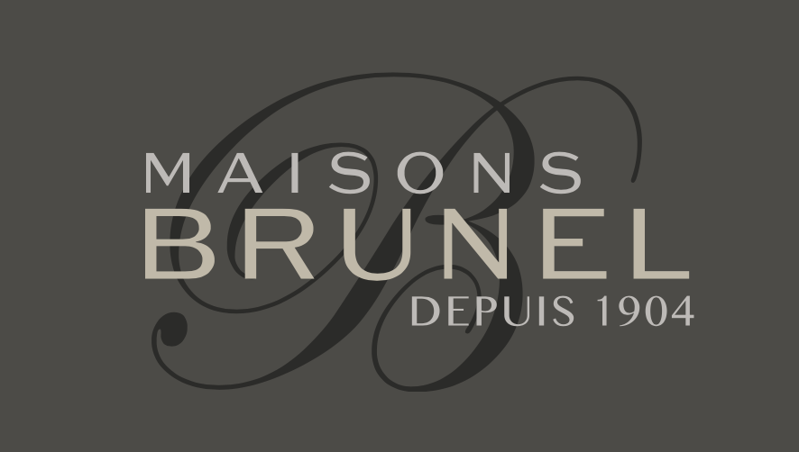
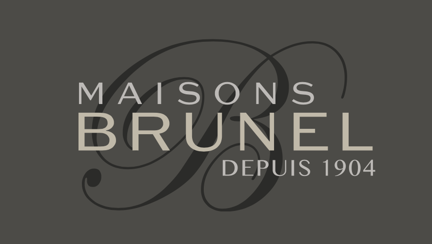

Les médiévales du Malzieu se tiendront les 30, 31 mai et 1er juin 2025.
Elles auront pour thème "Sur la quête du Graal" où vous pourrez vous aussi vous prendre au jeu, car nous vous préparons quelques surprises inattendues !
Comme chaque année, notre village hébergera campements, troubadours, artisans d'art, un marché médiéval...
L'an passé à était pour nous une année record avec près de 18 000 visiteurs sur nos trois jours de fête,
Alors nous vous attendons au moins aussi nombreux pour cette 13ème édition.
Au vu du thème choisi cette année, nous vous proposons donc non pas la quête du Graal, mais la quête de l'épée.
Une épée spécialement forgée pour l'occasion d'une valeur d'environ 1 000 € sera mise en jeu,
pour avoir une chance de repartir avec il vous faudra venir à bout d'une série d'énigmes plus tordues les unes que les autres,
qui auront lieu du vendredi jusqu'au samedi. Suivez notre actualité, il n'est pas impossible qu'un petit indice traîne pour démarrer votre quête avant votre arrivé.
La première personne qui arrivera à résoudre l'énigme finale sera l'élu et lheureux gagnant !

Comme de nombreuses années les ateliers de Jehanne seront présent
et vous proposerons toute une panoplie de costumes en location à partir de 8 € pour tout le week-end,
nous comptons donc sur vous pour parader dans notre belle cité du Malzieu avec vos plus beaux atours.
Tout le comité remercie l'ensemble des bénévoles, sans qui cette belle fête ne pourrait pas avoir lieu.
Ils travaillent, toute l'année pour vous offrir ces 3 merveilleux jours.
Alors si toi aussi, tu veux devenir bénévole et donner un peu ton temps quand tu as 5 minutes alors rejoint nous dans cette belle aventure.

Le partenariat avec les entreprises locales est primordial pour notre association,
ils ont encore etaient nombreux lors de notre dernière éditions des médiévales du Malzieu à repondre présent
et à nous soutenir que ce soit avec une participation financière ou alimentaire.
Un merci tout particulier à nos parrains.
Alors si vous aussi vous avez envie de les rejoindres et de nous aider prenez contact avec nous et nous passerons vous rendre visite.
Nous esperons à très vite.
 
